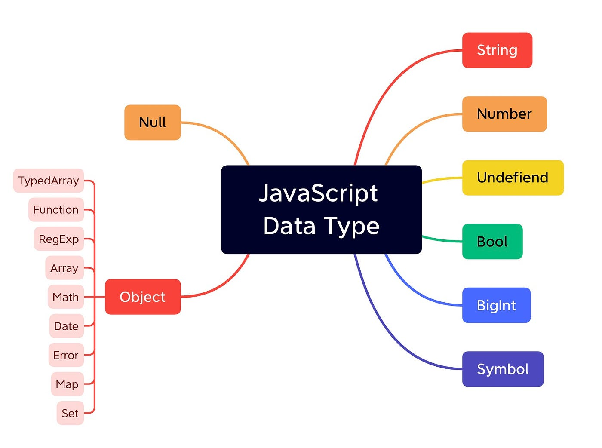

Тема 2. Загальна характеристика мови програмування JavaScript
У цій темі ми будемо розглядати:
-
Основні поняття та складові динамічної, об'єктно-орієнтованої мови програмування JavaScript.
-
Вирази та керування процесом виконання сценаріїв у JavaScript (умовні та циклічні інструкції).
-
Функції, об'єкти та масиви у JavaScript
Основні поняття та складові в JS
JavaScript (або скорочено JS) — це повноцінна динамічна мова програмування, яка застосовується до HTML документу та може забезпечити динамічну взаємодію на вебсайтах. Її розробив Брендан Айк, співзасновник проекту Mozilla, Mozilla Foundation та Mozilla Corporation.

JavaScript неймовірно універсальний і дружелюбний до новачків. З великим досвідом ви зможете створювати ігри, анімовану 2D і 3D графіку, повномасштабні додатки з базами даних та багато іншого!
JavaScript сам по собі досить компактний, і при цьому дуже гнучкий. Розробниками написано велику кількість інструментів поверх основної мови JavaScript, які розблоковують велику кількість додаткових функцій з дуже невеликими зусиллями.
Змінні
Змінні — це контейнери, всередині яких ви можете зберігати значення. Ви розпочинаєте з того, що оголошуєте змінну за допомогою ключового слова var (не рекомендується, продовжуйте читати, щоб отримати пояснення) або let, за яким слідує будь-яке ім'я, яким ви захочете її назвати:
let myVariable;
Тепер можна помістити в неї дані (іншими словами, визначити змінну), використовуючи оператор присвоєння = :
myVariable = "Bob";
або ж написати код компактніше
let
myVariable = "Bob";
Після визначення значення змінної ви можете змінити його пізніше:
myVariable = 'Steve';
Тепер змінна myVariable містить таке значення 'Steve'
Перевірка знань
Типи даних

String
Послідовність тексту, відома як рядок. Щоб
вказати, що це значення є рядком, ви повинні обгорнути його
лапками.
let myVariable = 'Bob';
Number
Числа. Числа не мають лапок навколо них.
let myVariable = 10;
Boolean
Значення True (Правда)/False (Брехня). Слова true і false — це
спеціальні ключові слова в JS і не потребують лапок.
let myVariable = true;
Array
Масив, який дозволяє зберігати кілька значень в одному посиланні.
let myVariable = [1, 'Bob', 'Steve', 10];
Звертатися до кожного елементу масиву можна так: myVariable[0], myVariable[1], і так далі.
Object
В принципі, все що завгодно. Все в JavaScript є об'єктом і може
бути збережено у змінній. Майте це на увазі, поки ви вивчаєте.
let myVariable = document.querySelector('h1');
Все з раніше наведених прикладів.
Оператори в мові JavaScript

Додавання(конкантинація)
Використовується для
додавання двох чисел або рядків
Символ: +
6 + 9;
"Hello " + "world!";
Віднімання, множення, ділення
Використовується як і в
класичній математиці
Символи: -,*,/
6 * 9;
6 - 9;
6 / 9;
Присвоєння
Використовується для присвоєння змінній
значення
Символ: =
let myVariable = "Bob";
== (оператор нестрогого рівняння): порівнює значення без
звертання до типів даних. JavaScript може провести автоматичне
приведення типів, якщо типи операндів відрізняються.
Приклад:
5 == "5" // true, тому що JavaScript автоматично перетворює рядок в число для порівняння
Дорівнює(оператор строгого рівняння)
Використовується
для перевірки двох значень на рівність. Повертає
true/false(Boolean).Воно не проводить автоматичне приведення
типів, і обидва операнди повинні бути одного і того ж типу для
отримання true.
Символ: ===
let myVariable = 3;
myVariable === 4;
false;
Логічні оператори
Заперечення
Повертає логічно протилежне значення, яке
йому передує; перетворює true в false і таке інше. Коли
використовується разом з оператором рівності, оператор заперечення
перевіряє, чи два значення не є рівними.
Символ: !, ==!
Основний вираз - true, але порівняння повертає false, оскільки ми його заперечуємо:
let myVariable = 3;
!(myVariable === 3);
false
Тут ми перевіряємо "myVariable НЕ рівно 3". Це повертає false, оскільки myVariable рівне 3.
let myVariable = 3;
myVariable !== 3;
false
Примітка:
Змішування типів даних може призвести до деяких неочікуваних
результатів при виконанні обчислень, тому будьте обережні,
правильно посилаючись на ваші змінні, щоб отримувати очікувані
результати. Наприклад, введіть "35" + "25" у вашу консоль. Чому ви
не отримали результат, який очікували? Тому що лапки перетворили
числа на рядки, отже, вас насправді чекає конкатенація рядків, а
не додавання чисел. Якщо ви введете 35 + 25, то отримаєте
правильний результат.
Логічний оператор "або"
в JavaScript представлений
символом ||. Використовується для виразів, що повертають true,
якщо хоча б один із умов вираження є true.
"let result = (5 > 3) || (10 < 5);"
true
Логічний оператор "і"
в JavaScript представлений
символом &&. Використовується для виразів, що повертають true,
лише якщо обидві умови вираження є true.
let result = (5 > 3) && (10 < 5);
false
Перевірка знань
Керування процесом виконання сценаріїв

Умови
Це конструкції в коді, які дозволяють перевірити, чи є вираз
істинним чи хибним, і виконати інший код залежно від отриманого
результату. Найбільш розповсюдженою формою умови є конструкція if
... else.
let iceCream = "chocolate";
if (iceCream === "chocolate") {
alert("Yay, I love chocolate ice cream!");
} else {
alert("Awwww, but chocolate is my favorite...");
}
Вираз всередині if ( ... ) — це перевірка, яка використовує оператор строгого рівності (як описано вище), щоб порівняти змінну iceCream із рядком "chocolate" і перевірити, чи вони ідентичні. Якщо це порівняння повертає true, виконується перший блок коду. В іншому випадку цей код пропускається, і виконується другий блок коду після інструкції else.
Якщо вираз всередині if буде дорівнювати нулю або одиниці, то цей блок не буде виконуватись ніколи, або ж навпки буде робити це завжди
if (0) { // 0 is falsy
...
}
if (1) { // 1 is truthy
...
}
Блок "else"
Інструкція if може містити необов'язковий блок "else" (інакше). Цей блок виконується, коли умова if є хибною (false).
if (age > 18) {
accessAllowed = true;
} else {
accessAllowed = false;
}
Деколи важливо перевірити кілька варіантів умови. Для цього використовується блок else if.
let score = 75;
if (score >= 90) {
console.log("Відмінно");
} else if (score >= 70) {
console.log("Добре");
} else if (score >= 50) {
console.log("Задовільно");
} else {
console.log("Незадовільно");
}
Перевірка знань
Цикли
У JavaScript існують різні види циклів, такі як for, while, і do...while, які дозволяють вам виконувати блок коду кілька разів. Цикли зручні, якщо ви хочете запускати один і той самий код знову і знову, кожен раз з іншим значенням.

Цикл «while»
У цьому циклі, блок коду буде
виконуватися, доки умова залишається істинною. У разі, якщо умова
вже на початку не є істинною, блок коду не виконається жодного
разу.
Цикл while має наступний синтаксис:
while (condition) {
// код
}
Код з тіла циклу виконується, поки умова condition є істинною.
let i = 0;
while (i < 3) { // выводит 0, затем 1, затем 2
alert( i );
i++;
}
Один виклик тіла циклу у наукових термінах називається ітерацією.
У цьому циклі, зазначеному вище, здійснюється три ітерації.
Якщо б рядок i++ був відсутній у вищенаведеному прикладі, то цей
цикл, в теорії, виконувався б безкінечно. На практиці, звісно,
браузер не дозволить цьому відбутися і надасть користувачеві
можливість зупинити «завислий» скрипт, а JavaScript на сервері
доведеться припинити процес.
Будь-який вираз чи змінна може бути умовою циклу, не лише
порівняння: умова циклу while обчислюється і перетворюється в
логічне значення.
Цикл "do...while"
Перевірку умови можна розмістити під тілом циклу, використовуючи
спеціальний синтаксис do...while:
do {
// тіло цикла
} while (condition);
Цикл спочатку виконає тіло, а потім перевірить умову condition, і
доки її значення рівне true, він буде виконуватись знову і знову.
Наприклад:
let i = 0;
do {
alert( i );
i++;
} while (i < 3);
Такий синтаксис виправданий, якщо ви хочете, щоб тіло циклу виконалося хоча б один раз, навіть якщо умова виявиться хибною. На практиці, частіше використовується форма з передумовою: while (...) { ... }.
Цикл "for"
Більш складний, але при цьому
найпоширеніший цикл - це цикл `for`. Виглядає він наступним чином:
for (початок; умова; крок) {
// ... тіло циклу ...
}
Давайте проаналізуємо кожну частину на прикладі. У цьому циклі викликається alert(i) для i від 0 до (не включаючи) 3:
for (let i = 0; i < 3; i++) {
alert(i);
}
Всього ми розглянули 3 типи циклів:
- while: Перевіряє умову перед кожною ітерацією.
- do..while: Перевіряє умову після кожної ітерації.
- for: Перевіряє умову перед кожною ітерацією і надає можливість задати додаткові налаштування.
Функції, об'єкти та масиви у JavaScript
Масиви у JavaScript
Масиви у JavaScript є збереженням даних, яке дозволяє зберігати колекцію елементів у впорядкованому порядку. Вони дуже потужний та важливий інструмент у програмуванні JavaScript, оскільки дозволяють зберігати, організовувати та маніпулювати даними.
Ось декілька основних аспектів масивів у JavaScript:
-
Створення масиву:
Масиви у JavaScript можна створити за допомогою літералу масиву[], у якому перераховані елементи масиву розділяються комами. Наприклад:let fruits = ["яблуко", "банан", "апельсин"];
-
Доступ до елементів:
Доступ до елементів масиву можна отримати за допомогою індекса, який вказується у квадратних дужках[]. Індексація починається з нуля. Наприклад:let firstFruit = fruits[0]; // Отримати перший елемент масиву (яблуко)
-
Додавання та видалення елементів:
Елементи можна додавати та видаляти з масиву за допомогою методів, таких якpush(),pop(),shift()таunshift(). Наприклад:fruits.push("груша"); // Додати новий елемент (груша) в кінець масиву
fruits.pop(); // Видалити останній елемент масиву (груша) -
Довжина масиву:
Властивістьlengthдозволяє отримати кількість елементів у масиві. Наприклад:let length = fruits.length; // Отримати кількість елементів у масиві
-
Ітерація по масиву:
Масиви можна перебирати за допомогою циклів, таких якforабоforEach(), або використовуючи інші методи перебору, такі якmap(),filter(),reduce(), тощо. Наприклад:for (let i = 0; i < fruits.length; i++) {
console.log(fruits[i]); // Вивести кожен елемент масиву
}
fruits.forEach(function(fruit) {
console.log(fruit); // Вивести кожен елемент масиву
});
Ці основні аспекти дозволяють вам ефективно працювати з масивами у JavaScript, що включає їх створення, доступ до елементів, додавання та видалення елементів, роботу з довжиною масиву та ітерацію по елементах масиву. Масиви важливий інструмент для роботи з даними та їх обробки в програмуванні JavaScript.

Функції у JavaScript
Функції в JavaScript - це блоки коду, які використовуються для виконання певних завдань або обчислень. Вони дозволяють упорядковувати код, забезпечуючи його перевикористання та створення більш структурованих програм.
Ось декілька основних аспектів функцій у JavaScript:
-
Оголошення функції:
Функції можна оголосити за допомогою ключового словаfunction, за яким слідує ім'я функції та список параметрів у круглих дужках, якщо вони потрібні. Тіло функції заключається в фігурні дужки. Наприклад:function greet(name) {
console.log("Привіт, " + name + "!");
} -
Виклик функції:
Функцію можна викликати, просто вказавши її ім'я та передавши необхідні параметри в круглих дужках. Наприклад:greet("Василь");
-
Повернення значення:
Функція може повертати значення за допомогою ключового словаreturn. Це значення може бути використане у викликах функції. Наприклад:function add(a, b) {
return a + b;
}
let result = add(3, 5); // result = 8 -
Анонімні функції:
Функції можуть також бути анонімними, тобто без імені. Вони можуть бути призначені змінним як значення або передані як аргументи іншим функціям. Наприклад:let square = function(x) {
return x * x;
};
let result = square(4); // result = 16 -
Функціональні вирази:
Функції також можуть бути оголошені як функціональні вирази, які призначаються змінним. Це дозволяє створювати анонімні функції або навіть іменовані функції. Наприклад:let multiply = function multiply(a, b) {
return a * b;
};
let result = multiply(3, 4); // result = 12
Ці основні аспекти дозволяють використовувати функції для організації та виконання коду в JavaScript. Функції дуже потужний інструмент для створення структурованих та повторно використовуваних програм.

Перевірка знань
Об'єкти у JavaScript
Об'єкти у JavaScript є основною будівельною одиницею мови і використовуються для зберігання даних та організації коду в логічні групи. Об'єкти можуть містити дані у вигляді пар ключ-значення, які називаються властивостями, а також методи, які є функціями, прикріпленими до об'єкта.
Основне що слід знати про об'єкти у JavaScript:
-
Створення об'єкта:
Об'єкти можна створювати за допомогою літерала об'єкта{}, в якому можна визначити властивості та їх значення, розділені двокрапкою. Наприклад:let person = {
name: "Василь",
age: 30,
profession: "розробник"
}; -
Доступ до властивостей:
Властивості об'єкта можна отримати або змінити, використовуючи квадратні дужки або крапку. Наприклад:let name = person.name; // Отримання значення властивості name
person.age = 35; // Зміна значення властивості age -
Методи:
Методи - це функції, що прикріплені до об'єкта. Їх можна визначити як властивості, що містять функції. Наприклад:let person = {
name: "Василь",
age: 30,
profession: "розробник",
greet: function() {
console.log("Привіт, я " + this.name);
}
};
person.greet(); // Виклик методу greet -
Ключове слово
this:
Ключове словоthisвказує на поточний об'єкт, в якому воно використовується. Воно дозволяє отримати доступ до властивостей та методів об'єкта всередині цього об'єкта. Наприклад, у методіgreetвищеthis.nameпосилається на властивістьnameпоточного об'єктаperson. -
Прототипи:
JavaScript використовує механізм прототипів для успадкування властивостей та методів від інших об'єктів. Кожний об'єкт в JavaScript має посилання на прототип, який використовуєть ся для пошуку властивостей та методів, які не визначені безпосередньо в об'єкті. -
Конструктори об'єктів:
Конструктори - це функції, що використовуються для створення нових об'єктів. Вони дозволяють створювати багато об'єктів з однаковою структурою та поведінкою. Наприклад:function Person(name, age, profession) {
this.name = name;
this.age = age;
this.profession = profession;
}
let person1 = new Person("Олексій", 25, "інженер");
let person2 = new Person("Наталія", 40, "вчитель");
Ці основні аспекти дозволяють вам ефективно працювати з об'єктами в JavaScript, організовувати код та створювати повторно використовувані компоненти вашої програми.
Перевірка знань
Перевірка знань
Виконайте наступні вказівки в редакторі нижче:
Створення масиву книг:
- Створіть змінну books.
-
Призначте цій змінній масив об'єктів.
[ { title: "Гаррі Поттер і таємна кімната", author: "Джоан Роулінг", pages: 360 }, { title: "Війна світів", author: "Герберт Уеллс", pages: 192 }, { title: "Модель Меркьюрій", author: "Бенджамін Харді", pages: 288 }, { title: "Пан Тадеуш", author: "Адам Міцкевич", pages: 280 }, { title: "Маленький принц", author: "Антуан де Сент-Екзюпері", pages: 96 } ];
- Кожен об'єкт має містити властивості title, author і pages, що представляють назву книги, ім'я автора та кількість сторінок відповідно.
Виведення інформації про кожну книгу:
-
Виведіть заголовок, що вказує на те, що наступні дані стосуються
книг.
console.log("Інформація про книги:");
- Створіть цикл, який перебирає кожний об'єкт у масиві books.
-
Для кожного об'єкта виведіть на екран назву книги, ім'я автора
та кількість сторінок.Приклад виведення назви книги:
console.log("Назва: " + books[i].title);
- Додайте роздільник між кожною книгою для зручності відображення.
See the Pen Modal-work by Oleksa (@gfpvirml-the-styleful) on CodePen.
Після правильного виконання попередніх пунктів натискаємо кнопку "Edit on CodePen" у верхньому лівому куті редактора. У вас відкриється нова вкладка з введеним вами кодом. Потім зліва знизу натискаємо кнопку "Console"
При правильному виконанні вказівок в консолі побачимо наступне:
До наступної теми